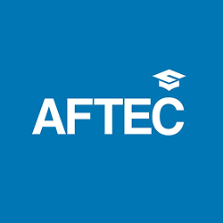
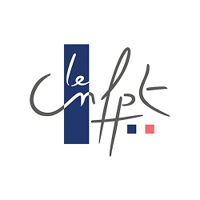
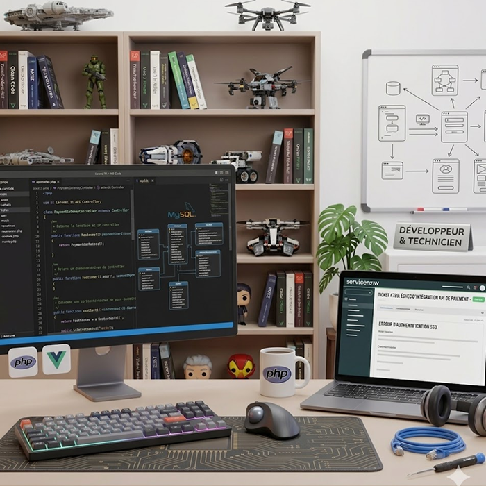
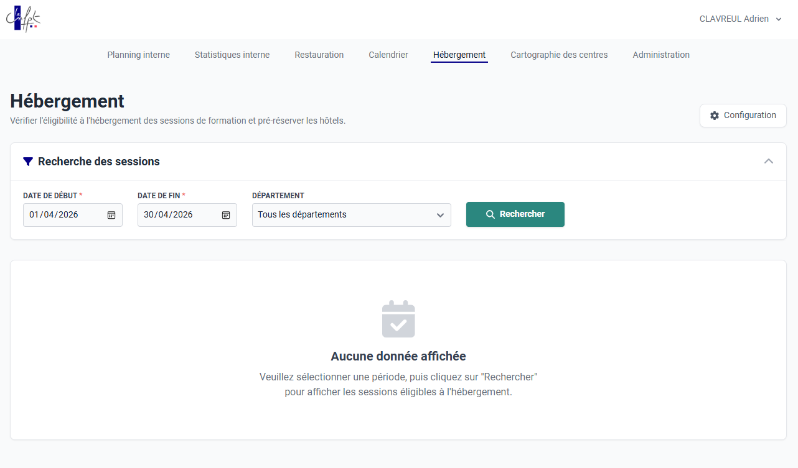
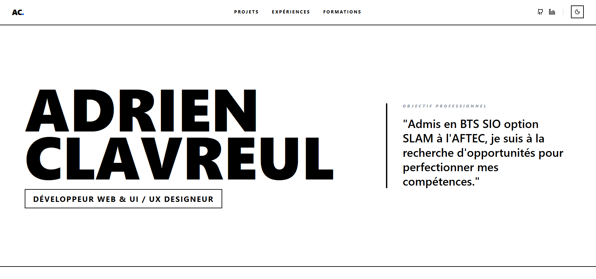
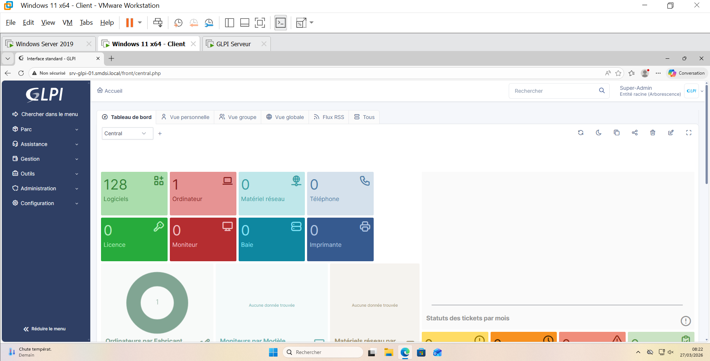
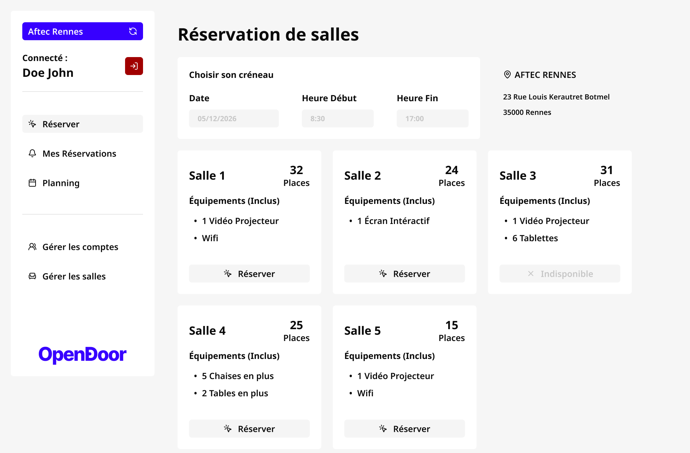
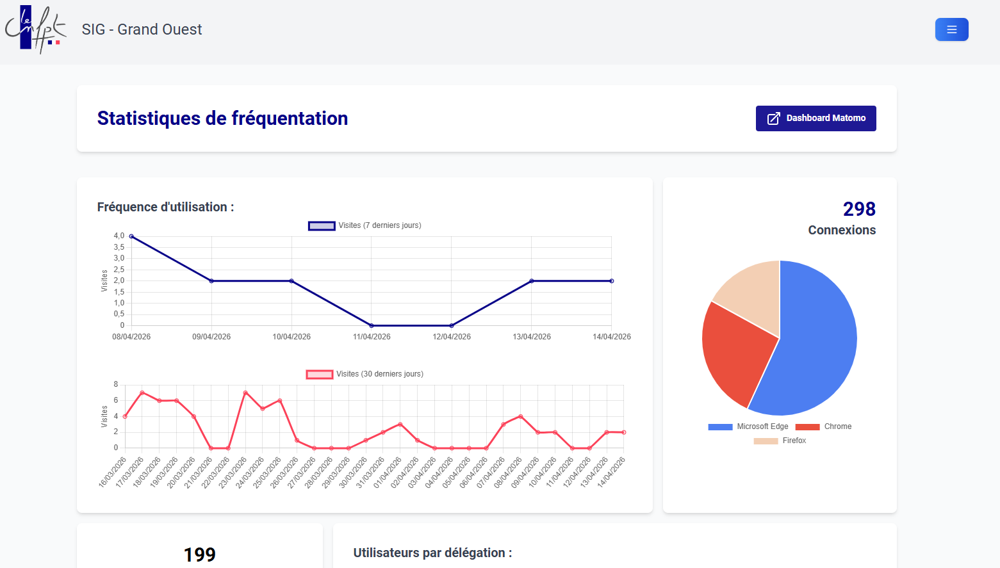

Qui suis-je ?
Développeur Full-Stack
Adrien Clavreul - 23 ans
- Étudiant en BTS SIO option SLAM
- Alternant au sein du CNFPT


01 - à propos
Développeur Full-Stack
Adrien Clavreul - 23 ans
Objectif : Travailler dans une agence de développement d'applications web / client lourd
02 - travail
Secteur Public
Je travaille pour la délégation de Bretagne qui compte environ 200 fonctionnaires pour la Bretagne. Nous collaborons aussi avec les délégations de Centre Val-de-Loire et délégations du Pays de la Loire.

03 - Missions
Développeur & Technicien
04 - Projet
Application Web
Technologies utilisées
Le but de ce nouveau module était de permettre une meilleure gestion des nuitées pour les stagiaires. Calcul des distances automatique, mise en place des nuitées avec un retour des stagiaires via un LimeSurvey
Données récupérées via une API connectée à une base de données Oracle


05 - Projet
Développement Web · E6
Technologies utilisées
Création d'un portfolio en ligne reflétant mon identité de développeur web. Direction artistique typographique et minimaliste, maquettée sur Figma avec plusieurs itérations avant intégration.
Développé avec React 18 et TypeScript, animations via Framer Motion. Système i18n sur-mesure avec script de traduction automatique.
05 - Projet
Infrastructure & Réseau · E5
Technologies utilisées
Infrastructure entièrement virtualisée sous VMware. Windows Server assure l'AD, le DHCP et le DNS. Remontée automatique des machines dans GLPI via GPO, authentification centralisée par LDAP.
Le serveur Ubuntu expose GLPI via Apache2. Les utilisateurs s'authentifient avec leurs identifiants de domaine sans compte supplémentaire.


05 - Projet
Développement Logiciel · E6
Technologies utilisées
Application client lourd permettant aux professeurs de réserver des salles et ressources pédagogiques. Gestion des conflits de réservation côté serveur, architecture en couches UI / métier / données.
Modélisation complète via MCD avant développement. Maquette Figma pour valider l'ergonomie, puis connexion à une base MariaDB.
05 - Projet
Développement Web · E6
Technologies utilisées
Mise en place des statistiques d'utilisation de l'application via Matomo. J'ai utilisé son API et nous l'avons deployé sur notre Docker pour être propriétaires des données.
J'ai également amélioré l'algorithme de calcul des distances afin de minimiser le delta avec ViaMichelin que nous utilisions avant.
